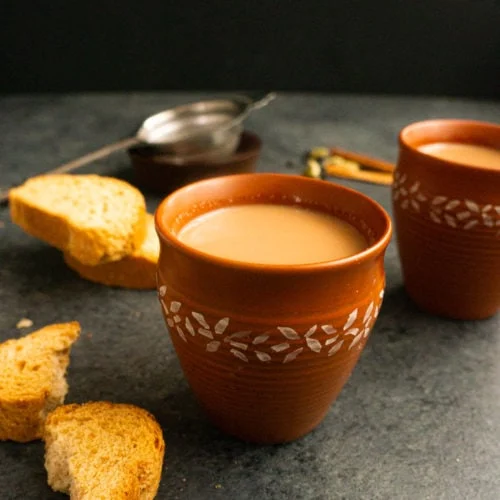

Masala Chai

More on Masala Chai
Chai is like religion for many people in India. The day does not start until you have a warm cup of kadak Chai (strong tea).
Ingredients Required
- 1 ⅓ cup of Water
- ¾ cup of milk
- Sugar
- Tea Leaves
- Fresh Ginger
Steps
- Start with gathering the basic ingredients and the spices you want to add to your chai.
- Heat up about 1 ⅓ cup of water in a pot on medium-high heat. (This is for 2 cups of chai)
- While water is heating, crush spices using a mortar and pestle or a coffee/spice grinder. Add the crushed spices to the water.
- Grate the ginger directly into the pot of water.
- Reduce heat to medium and bring the water to a boil.
- Now add the tea leaves and let it boil for a minute. You can also add sugar at this time or add it in the cup when serving.
- Add ¾ cup of milk and stir it in. Bring the tea to a boil. The tea can overflow easily, so keep a close eye.
- Once the tea comes to a boil. Turn off the gas and cover with a lid for one minute.
- Strain the tea in a cup and enjoy!